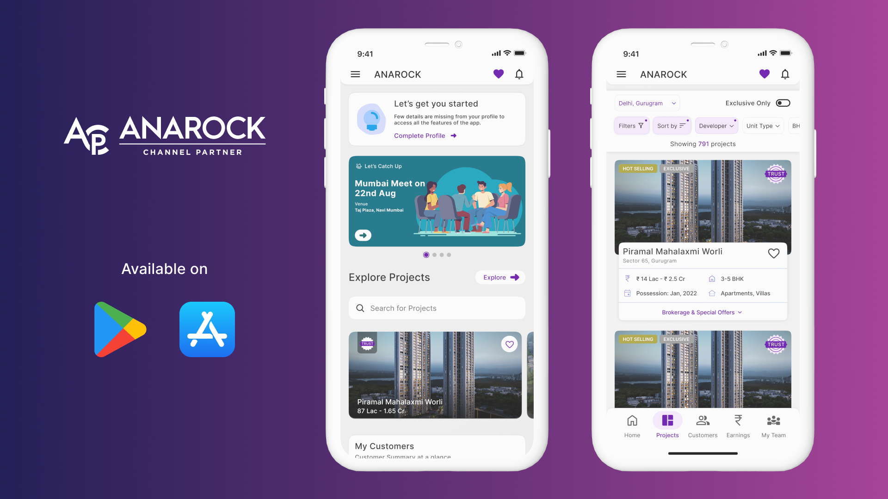

An Application for Govt. of Maharashtra UI Case Study
Anagrow is a B2B Platform for channel partners(brokers) to view listing of properties and sell them to clients. App allows CPs to manage all their clients with the help of CRM which is inbuild in the app and also after selling the property CPs can manage all the finance proceeding in the app itself with the help of CM(commission management). CPs get exciting offers and early commission on the selling of properties with Seal of Trust.
Objective
To create a user-friendly mobile application for ASHA workers to conduct digital health surveys efficiently, collect data accurately, and improve healthcare delivery in rural communities.
1. User research and needs analysis
2. Information architecture and user flow design
3. Wireframing and prototyping
4. UI design and interaction design
5. Usability testing and iteration
6. Collaboration with developers
Duration
July/22 - Jan/23 (4 Months)
Target Audicence
ASHA workers, healthcare supervisors, and community health officials.
UI Designs
DHS - Digital Health Survey
Digital Health Survey (DHS) Module for ASHA workers features a user-friendly interface with intuitive navigation and tooltips for ease of use. It supports offline functionality, allowing data collection without internet access and automatic syncing later. Customizable forms and real-time validation enhance data accuracy, while GPS integration enables precise location tracking. Multimedia options like photo and audio capture enrich the data. Strong security measures protect sensitive information, and analytics provide valuable insights for health planning.

Module 2 - Digital Visiting Card
Digital Visiting Card is a CP's visiting card which he can share with the potential clients to let them know that he is with the organisation or he has official RERA ID. Here user can create the visiting card by filling all the necessary details and then choose of the templete to select his visiting card. User can also upload the existing visiting card by uploading it.

Made with ❤️ by Sumit.